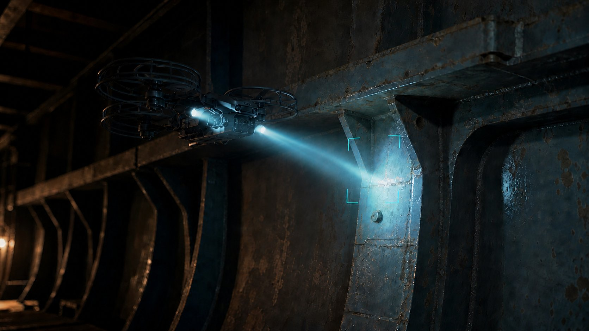
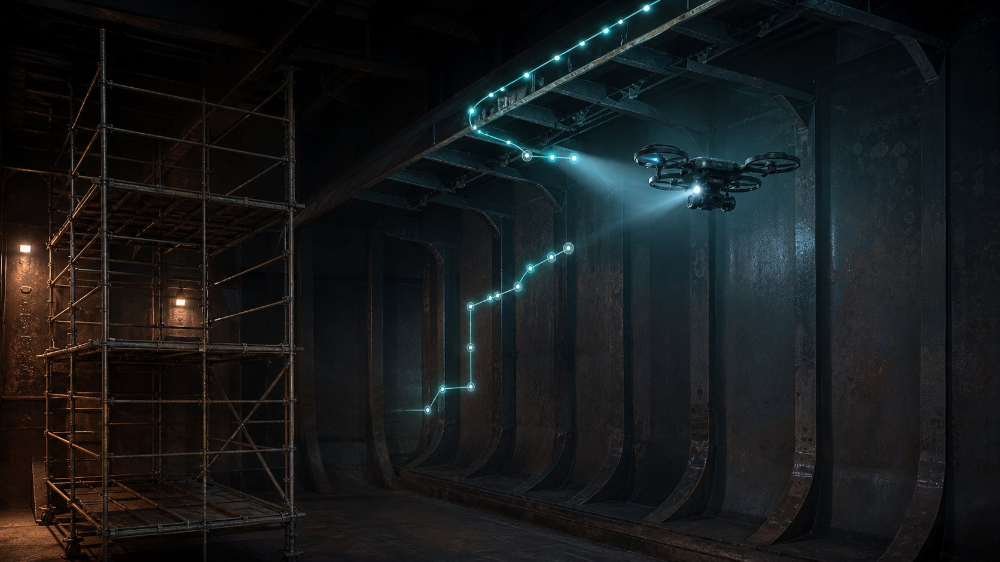
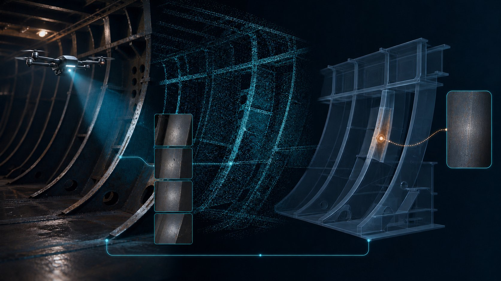

A bulk carrier is approaching its special survey. Conventionally, obtaining a clear view of frames, brackets and connections high in the cargo hold may require the shipowner to arrange scaffolding, mobile elevating work platforms or rope access—or to send personnel into areas exposed to working-at-height and enclosed-space hazards. How much would the survey workflow change if a drone could first deliver the images directly to the class surveyor?
This is not a drone product review. It approaches RIT from ship-management and operational decision-making perspectives to answer five practical questions: what RIT can replace, where shipowners can save, what happens after a defect is found, how far major classification societies have progressed, and how to prepare for the next survey.
The conclusion first
Drones will not directly replace class surveyors. What they replace first are certain physical means of access, such as scaffolding erected solely for inspection, rafting, mobile elevating work platforms, rope access and repeated tank or hold entry. Whether the resulting survey evidence is accepted still depends on the applicable rules, image and measurement quality, location traceability, a recognised or approved service supplier, and the attending surveyor’s professional judgement.
Physical access is what changes
RIT changes how a surveyor obtains evidence; it does not remove classification or statutory requirements, or professional responsibility.
The greatest value is targeted inspection
Use RIT to screen a wide area first, then concentrate direct close-up examination, UT and NDT on genuinely suspect locations.
The greatest limitation is evidence quality
Seeing corrosion is not the same as measuring remaining thickness; capturing an anomaly is not the same as completing assessment and acceptance.
Data traceability is the next frontier
Future competition will be about more than who flies the best drone; it will be about who produces locatable, repeatable and auditable data.
1. Why should ship managers pay attention now?
RIT did not appear in 2026. IACS had already issued Recommendation 42 as industry guidance on the use of Remote Inspection Techniques for surveys, while major classification societies established rules, service-supplier approval and practical implementation procedures around 2018–2019.[4]
The major turning point came in May 2026, when IMO’s Maritime Safety Committee at MSC 111 adopted amendments to the 2011 ESP Code introducing provisions for the use of RIT in close-up surveys of existing bulk carriers and oil tankers, and approved the associated guidelines. The amendments are scheduled to enter into force on 1 January 2028.[1] This gives established classification-society practice a clearer and more consistent IMO ESP regulatory framework.
IACS Recommendation 42 Rev.2
Established a key industry benchmark for RIT surveys, covering acceptability, planning, equipment and reporting of results.
Major class societies formalise RIT
ClassNK issued guidance on drones in class surveys, while LR, DNV and others established RIT service-supplier approval categories and procedures.
MSC 110 approves draft ESP Code amendments
IMO explicitly recognised drones, ROVs and crawlers as RIT platforms supporting close-up surveys and UT.[2]
MSC 111 formally adopts the amendments
The RIT provisions for the ESP Code were adopted and the associated guidelines approved, with entry into force set for 2028.
New framework enters into force
RIT moves into a clearer international framework for existing bulk carriers and oil tankers subject to the ESP Code.
2. First, a distinction: RIT is not a remote survey
The terms are often used interchangeably, but they have different management and accountability implications. ABS explains the distinction clearly: a remote survey concerns whether the surveyor is physically present, whereas RIT concerns how the surveyor obtains inspection information from difficult-to-access areas.[6]
Remote Survey
Core question: Is the surveyor physically on board?
- The surveyor may be ashore
- Verification is performed through live video, photographs, recorded video, documents or digital records
- Only certain survey items are eligible, generally subject to case-by-case review
RIT | Remote Inspection Techniques
Core question: How does the surveyor access the inspection location?
- The surveyor may still be on board to witness the inspection
- Evidence is obtained using drones, ROVs, wall-climbing robots or crawlers
- The focus is on replacing certain forms of direct physical access
Remote inspection does not necessarily remove the surveyor; it changes how the surveyor obtains evidence. The essence of RIT is not “viewing from a distance”, but whether the evidence is sufficient to satisfy the original survey requirements.
3. So, what can drones actually replace?
The title asks whether drones can replace class surveyors, but the more precise question is: Can drones, ROVs or crawlers replace some of the costly, high-risk access arrangements made solely to obtain evidence?
Within a suitable survey scope, RIT may reduce or replace:
- some scaffolding and working platforms erected solely for visual examination;
- some use of mobile elevating work platforms, rafting and rope access;
- unnecessary work at height and repeated entry into enclosed spaces;
- diver exposure during certain underwater examinations; and
- some UT work at elevated or difficult-to-access locations.
4. What can RIT actually do today?
RIT is not a single piece of equipment. It is a combination of platform, sensors, procedures, personnel qualifications and surveyor acceptance. ABS publicly identifies general visual examination, close-up visual examination and ultrasonic thickness measurement (UT) among the applicable tasks; DNV, LR, KR and others have also established corresponding service-supplier and witnessing requirements.[5][6][7]
Drone / UAV
Suited to visual examination and close-up surveys of cargo holds, ballast tanks, elevated frames, brackets, web frames, deck undersides and difficult-to-access corners.
Remotely Operated Vehicle (ROV)
Suited to underwater hull, rudder, propeller and sea-chest examinations. Whether it may replace particular diving or dry-dock items remains subject to the rules and survey scope.
Wall-climbing robots / crawlers
Can use magnetic wheels to travel over steel plate or structural surfaces while carrying cameras or UT probes to support elevated or continuous thickness measurement.
LiDAR / SLAM / 3D modelling
Helps locate flight paths and anomalies, linking images and UT readings to structural models to improve traceability and later comparison.
5. Practical scenario: what happens when a drone finds a suspected crack?
Imagine a bulk carrier undergoing a special survey. A drone reaches an upper bracket on the port side of No. 3 cargo hold, and a suspected linear indication appears in the image. The survey is not complete; the real assessment has only just begun.

Bulk carrier · Special survey · Suspected crack at a frame connection
- Confirm the exact location No. 3 cargo hold, port side, frame number, upper bracket, forward or aft face. Without location traceability, even a clear image loses much of its survey value.
- Improve the visual evidence Request a closer view, different angles, additional lighting, another flight, continuous video and a scale reference.
- Determine whether visual evidence alone is conclusive Distinguish shadows, rust streaks, coating cracks and contamination from a genuine structural crack.
- Escalate the examination Arrange direct close-up examination, UT, MPI/PT, dimensional measurement or other NDT as required.
- Class surveyor makes the classification decision Decide whether to accept the condition, require repair, extend the examination, monitor it, or require conventional access.
KR’s 2025 RIT guidance explicitly states that RIT is a tool to assist the attending surveyor. If the surveyor is not satisfied with the results, conventional methods may still be required; after a defect or corrosion is found, other methods may also be needed to determine the extent of assessment and repair.[13]
6. RIT is better understood as an “inspection funnel”
For management, the most useful model is not “drones replace every manual inspection”, but a survey designed as a funnel: use technology to cover a wide area quickly, then progressively narrow the focus to locations that genuinely require direct close-up examination and measurement.
RIT’s greatest value may not be eliminating direct human inspection, but making it more targeted.
7. Where can shipowners actually save?
For a ship manager or technical superintendent, the commercial value of RIT is not usually “buying a drone”. It lies in shortening preparation, reducing access-equipment arrangements, lowering personnel exposure and minimising operational disruption caused by waiting and repeated entry. DNV publicly states that, where conditions are met, RIT may avoid rafting, mobile elevating work platforms or scaffolding while still delivering data quality equivalent to conventional inspection.[5]

A. Access costs
Scaffolding, rafting, mobile elevating work platforms, rope access, temporary access equipment and the costs of erection, removal and coordination.
B. Time and operational disruption
Time spent on survey preparation, waiting, shipyard scheduling, off-hire risk and repeated examinations.
C. Exposure to safety risks
Personnel exposure to work at height, enclosed spaces, falling objects, slippery environments, hazardous gases and underwater work.
The greatest saving may come not from the drone itself, but from everything that no longer needs to be built simply to “get a person close enough”.
8. Limitations that drone sales presentations rarely emphasise
The risks of RIT do not arise only from flight failure. A greater risk is having data that appears useful but does not constitute sufficient evidence. If management focuses only on flight speed and image resolution, it may overlook the following factors that directly affect acceptance of survey evidence.
Lighting and shadows
Corrosion, shadows, oil contamination and suspected crack indications can be confused; high resolution does not guarantee adequate lighting or viewing angles.
Visual blind spots
Bracket backs, stiffener connections, complex intersections and areas behind obstructions may not be fully covered.
Surface condition
Heavy scale, mud, water, oil, salt deposits or uncleaned surfaces may make structural assessment from images impracticable.
Hazardous areas
Batteries, motors and electronics may present ignition sources. Gas-free status, Ex suitability and onboard hazardous-area requirements must be considered.
Positioning and coverage
GPS and magnetic compasses may be disrupted inside enclosed steel spaces. It must be demonstrated that the planned flight path and structures to be inspected have been fully covered, without omissions.
Measurement gap
A visual finding is not a measurement of plate thickness, crack depth or deformation. UT, NDT or direct human access remains necessary where required.
9. The greatest challenge may be data, not the drone
A single compartment inspection may produce thousands of photographs, hours of video, LiDAR point clouds and large volumes of UT readings. But unless each data point can be tied to a frame, face, elevation and survey event, more data simply becomes harder to manage.

Reusable RIT systems should progressively integrate:
BV issued its NI693 RIT guidance in 2025 and publicly expanded its own network of RIT centres and trained surveyors in 2026. Its published technology direction also includes LiDAR, AI and 3D inspection data.[8][9] This suggests that the next stage of competition will move from “can the platform get inside?” to “can the data be located, compared, audited and converted into asset-integrity information?”
What will matter in the future is not only who has the best drone, but who can build the most reliable, traceable and repeatable inspection dataset.
10. How far have major classification societies progressed with RIT?
The following is not an official ranking, nor does it imply that any classification society will automatically accept RIT for every vessel type, under every flag Administration, or for every survey item. It is an assessment of “publicly visible implementation maturity”, based on verifiable rules and guidance, approved service suppliers, cases and deployment information available as of August 2026. Actual acceptance remains subject to confirmation by the vessel’s classification society, flag Administration, attending surveyor and the applicable scope.
| Classification society | Published framework / rules | Public evidence of implementation | Maturity assessment | Practical implication for management |
|---|---|---|---|---|
| Bureau Veritas | NI693 “Remote Inspection Techniques” was issued in 2025 and linked to the rules for steel ships and the service-supplier framework.[8] | In 2026, BV reported approximately seven RIT centres and more than 15 qualified drone surveyors, with plans to expand to 16 centres and more than 40 surveyors by year-end. These figures were published by BV.[9] | Active public deployment Shows a move from third-party tools toward an in-house surveyor network and an AI/LiDAR/3D data ecosystem. |
Large fleet operators can ask whether a nearby RIT centre exists, what vessel types it specialises in, which data-delivery formats are available and whether AI/3D extensions are offered. |
| DNV | Established an approved service-supplier procedure in 2019, allowing drones, crawlers and ROVs as alternative means of access for close-up surveys.[5] | Publicly states that the attending surveyor may witness through live imagery and that data quality must be equivalent to conventional inspection; in 2025, DNV reported growing use of drone close-up surveys and UT on bulk carriers.[16] | Mature operations RIT has entered a formalised alternative survey process and is no longer merely a proof of concept. |
A proposal should clearly address supplier approval, live imagery, lighting, resolution, survey scope, and acceptance under ESP and by the flag Administration. |
| ABS | The current public framework covers general visual examination, close-up visual examination and UT using platforms including UAVs, ROVs and crawlers; data must be provided by an ABS recognised service supplier.[6] | Requires the shipowner and supplier to submit an inspection plan and verify the certificate scope against the platform, payload, asset type and survey task. | Highly formalised A clear quality-assurance chain links equipment, supplier, task scope and inspection plan. |
Do not merely ask whether the supplier is “ABS recognised”. Verify that the certificate covers the specific platform, payload, vessel type and survey task. |
| Lloyd’s Register | Established an RIT service-supplier category for close-up surveys in 2019, covering UAVs, drones, robotic arms, ROVs, crawlers and wall-climbing robots.[7] | If thickness measurement is also performed, the corresponding approval as a thickness-measurement service supplier is required. | Mature, with case-by-case acceptance The framework is established; actual acceptance emphasises survey scope, supplier qualification and surveyor judgement. |
Before submitting the survey proposal, confirm the recognised scope for close-up survey and thickness measurement with the local LR office. Do not treat the two approvals as interchangeable. |
| Korean Register | The “2025 RIT Guidance” explicitly addresses recognised suppliers, inspection plans, risk assessments, flight plans, data review, reporting and contingency arrangements.[13] | A 2020 public case involved drones and wall-climbing robots performing hull examination and thickness measurement on a bulk carrier without scaffolding.[14] | Comprehensive technical guidance Provides specific requirements for operating processes, hazardous areas, image quality and conditions requiring additional conventional examination. |
KR’s guidance is a useful reference for developing a shipowner’s RIT application checklist and onboard preparation plan. |
| ClassNK | Issued the “Guidelines for Use of Drones in Class Surveys” in 2018, covering applicability, safe operation and supplier requirements.[11] | Its current approved-supplier database still lists companies with valid certificates for close-up surveys using RIT.[12] | Mature framework Rules and supplier arrangements are verifiable; public information reveals less about fleet-wide deployment or the scale of AI/3D expansion. |
For Japanese and Asian fleets, certificate limitations can be checked directly in NK’s supplier database and declared in advance through survey-planning questionnaires. |
| RINA | Has capabilities for drone-based remote inspection and remote surveys, although public materials sometimes cover both concepts and must be read with that distinction in mind. | A 2020 public case on an ESP bulk carrier combined drone close-up surveys of ballast tanks and cargo holds with remote statutory and classification surveys.[15] | Proven cases, less visible scale Capabilities and cases are verifiable, but public information on the current scale of its structural RIT network is less explicit than BV’s. |
A proposal should first clarify whether it involves RIT, a remote survey or both, and confirm flag Administration authorisation and any relevant class notation or eligibility requirements. |
11. RIT readiness checklist for shipowners and ship managers
The most important management decision is not whether to buy a drone, but whether the next survey contains a scope suited to RIT and whether review, supplier arrangements, drawings and contingency plans can be prepared in advance.
- First confirm with class: is RIT acceptable for this survey item?Confirm vessel type, age, survey type, close-up / overall / UT scope and known defects.
- Confirm flag Administration requirementsParticularly for ESP, statutory surveys or transitional arrangements. Do not assume class acceptance automatically means flag acceptance.
- Verify the service supplier’s certificate scopeCheck the platform, payload, vessel type, UT/NDT qualifications and certificate validity—not merely the supplier’s marketing.
- Prepare locatable structural informationGeneral arrangement, tank and hold plans, frame numbering, structural drawings, hazardous-area plans and inspection routes.
- Define the evidence standardResolution, lighting, distance, angle, live imagery, recording, scale reference, location marking and data-delivery format.
- Plan hazardous-area and HSE controlsGas-free status, ignition sources, batteries, falling objects, collision, communication failure, launch and recovery areas, and simultaneous operations.
- Define escalation criteria in advanceSpecify when a suspected crack indication, substantial corrosion, deformation or inadequate imagery will trigger close-up examination, UT, NDT or scaffolding.
- Integrate the data into long-term asset managementRequire frame-level traceability, naming conventions, version control and baseline data suitable for comparison at the next survey.
12. The final answer: can drones replace class surveyors?
RIT is moving from an “alternative technology” into the normal toolbox of classification surveys. What it is most likely to change is not whether the surveyor exists, but whether the surveyor must personally enter every hazardous, expensive or difficult-to-access location solely to obtain evidence.
The future of ship survey may not be a world without surveyors. It is more likely to be a world in which surveyors no longer needlessly place themselves in hazardous locations simply to obtain evidence.
The real future competition will therefore not simply be drones versus people. It will be between conventional, physical-access-based surveys and data-driven, targeted, technology-assisted surveys. For the foreseeable future, surveyor judgement will remain at the centre of the decision.
Frequently asked questions
Can the crew take drone footage themselves and submit it to class for acceptance?
Clear imagery alone does not guarantee acceptance. The classification society’s acceptance, the service supplier’s recognition or approval, operator qualifications, inspection plan, live witnessing, location traceability and data integrity normally still need to be confirmed. Requirements may also differ by survey item and flag Administration.
Does RIT mean nobody needs to enter a ballast tank or cargo hold?
Not necessarily. RIT can reduce personnel entry and access at height, but space preparation, atmosphere testing, launch and recovery, equipment control, additional examination, UT/NDT, repair and confirmation may still require entry. A mature solution reduces unnecessary exposure; it does not guarantee zero entry.
Can drone-based UT completely replace conventional thickness-measurement firms?
Such a general conclusion is not currently justified. Drones or crawlers carrying UT equipment can obtain measurements in specific scenarios, but the measurement-point scope, coupling quality, surface preparation, calibration, approval or recognition status, representativeness and rule requirements remain subject to case-by-case confirmation. Some classification societies also require separate supplier approvals for RIT and thickness measurement.
Which classification society has the most mature RIT capability?
No single ranking fits every situation. In 2026, BV publicly demonstrated an active in-house network and AI/3D integration; DNV, ABS, LR, KR, ClassNK and RINA also have established frameworks or cases. For a shipowner, the key question is not brand ranking but whether the society can accept RIT for the specific vessel type, flag Administration, survey scope, location and supplier arrangements.
Sources and further reading
This article relies primarily on official IMO, IACS and classification-society materials, supplemented by established maritime media for public cases and deployment information. Sources were verified on 10 August 2026.
- Class society / IMO meeting summaryDNV — IMO MSC 111: New MASS Code adopted (adoption of the ESP Code RIT amendments and 2028 entry-into-force information).
- Official IMO sourceIMO — Maritime Safety Committee, 110th session (RIT, drones, ROVs, crawlers, close-up surveys and UT).
- Official IMO sourceIMO — SDC 12 Meeting Summary (RIT guidelines for ESP surveys).
- Official IACS sourceIACS Recommendation 42 — Guidelines for Use of Remote Inspection Techniques for Surveys.
- Official DNV sourceDNV — Survey by RIT: use of approved service suppliers.
- Official ABS sourceABS — Remote Inspection Techniques (the distinction between RIT and remote surveys, general visual examination, close-up survey, UT, suppliers and inspection plans).
- Official LR sourceLloyd’s Register — Service Supplier category for close-up surveys using RIT.
- Official BV sourceBureau Veritas — NI693 Remote Inspection Techniques.
- Official BV sourceBureau Veritas — Athens RIT center and 2026 network expansion. Network and staffing figures were published by BV.
- Industry mediaThe Maritime Executive — BV next-generation remote inspection at Posidonia (republished corporate announcement / supplementary coverage).
- Official ClassNK sourceClassNK — Guidelines for Use of Drones in Class Surveys.
- Official ClassNK sourceClassNK — Approved Service Supplier: Close-up survey using RIT (current database example).
- Official KR sourceKorean Register — Guidance for Remote Inspection Techniques 2025.
- Industry mediaSeatrade Maritime — KR drone and crawler hull survey without scaffolds.
- Official RINA sourceRINA — Statutory and class surveys using remote technologies on an ESP bulk carrier.
- Official DNV sourceDNV — How new rules and tools are reshaping bulk carrier safety and efficiency (2025 trends in drone close-up surveys and UT).